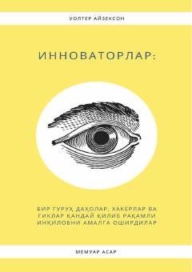

IRaqamli inqilobning yaratilish tarixi va uning ortidagi jamoaviy mehnat haqidagi asar.
Ushbu kitob raqamli inqilobning yaratilish tarixi va unga hissa qo'shgan kashfiyotchilar, xakerlar hamda tadbirkorlarning o'zaro hamkorligi haqida hikoya qiladi. Muallif innovatsiyalar faqat yakka shaxslar emas, balki jamoaviy mehnat va ijtimoiy-madaniy muhit natijasida yuzaga kelganini tahlil qiladi.